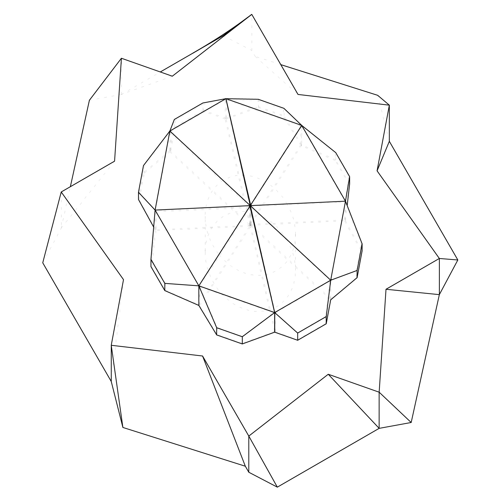
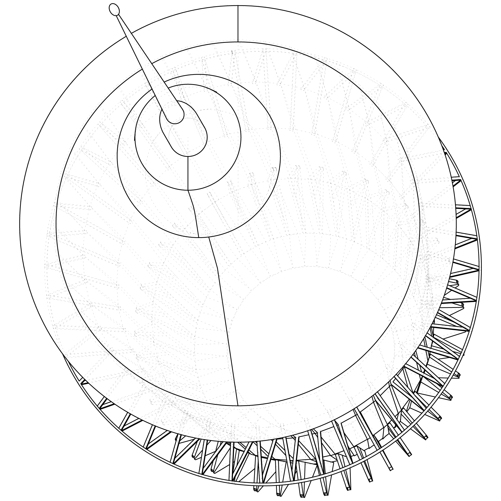

Elemental Drafts
Fall 2025A collection of line drawings representing several examples of the core elements of architecture. Some are drafted using an axonometric projection, while others are section perspective drawings.


A collection of line drawings representing several examples of the core elements of architecture. Some are drafted using an axonometric projection, while others are section perspective drawings.


